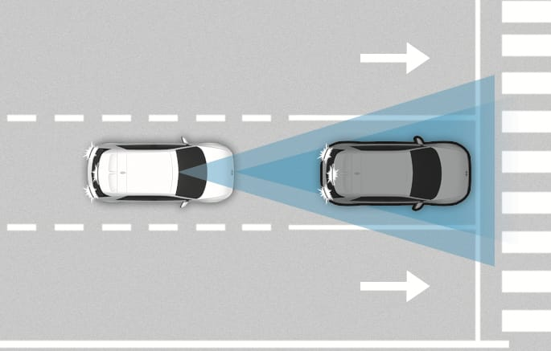
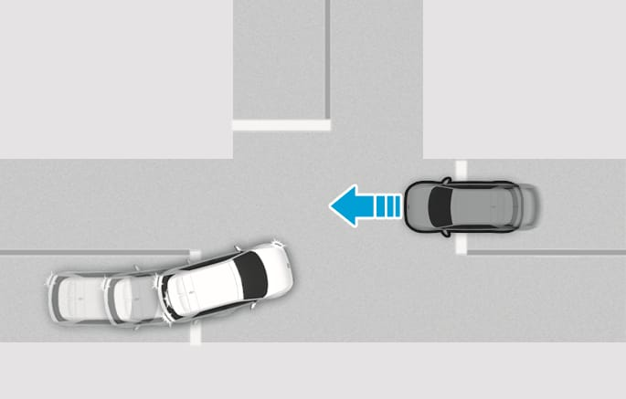
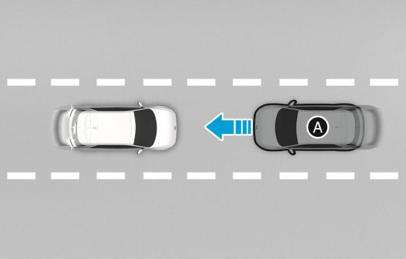
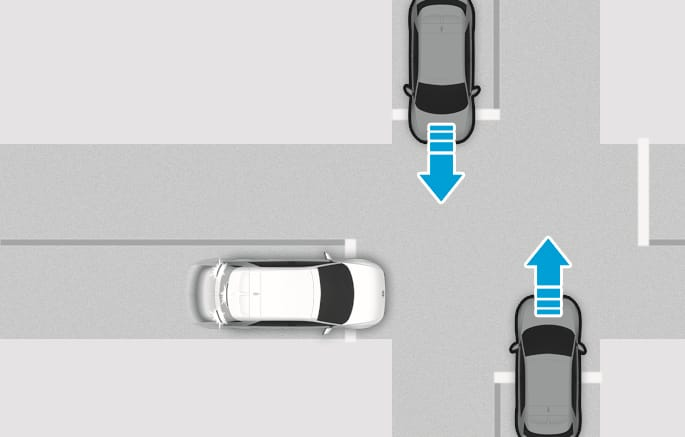
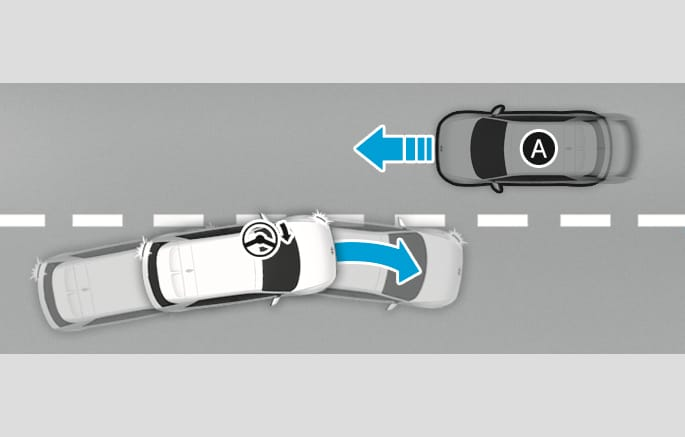
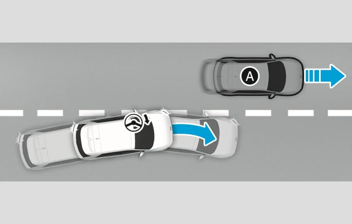
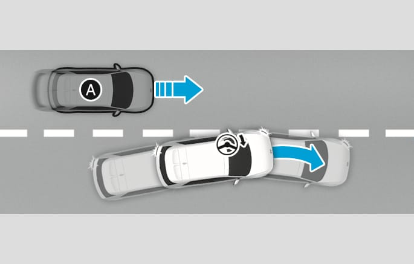
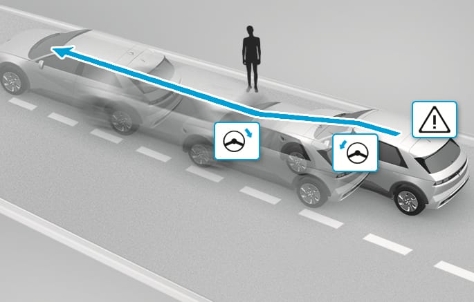
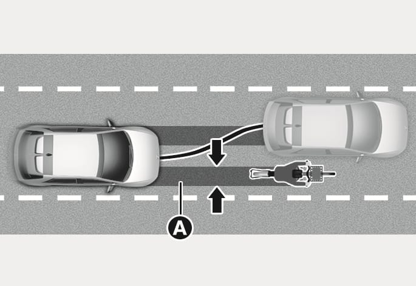

전방 충돌방지 보조 작동

2C_FCABasicFunction
주행 중 전방 차량, 이륜차, 보행자 및 자전거 탑승자와 자차 속도 조건에 따라 충돌 위험이 판단되면 경고 또는 긴급 제동합니다.
-
차량 및 이륜차 대상:
-
자차 속도가 약 10-200 km/h에서 충돌 위험이 있으면 경고 또는 약하게 제동을 도와 줍니다.
-
대상이 주행 중인 경우 자차 속도가 약 10–130 km/h, 대상이 정차 중인 경우 자차 속도가 약 10–85 km/h일 때 충돌 위험이 있으면 강하게 제동을 도와 줍니다.
운전자가 차로 변경으로 충돌을 피하기 어렵다고 판단되는 경우에는 자차 속도가 약 10–100 km/h일 때 더 이른 시점에 제동을 도와 줍니다. (사양 적용 시)
-
-
보행자 및 자전거 탑승자 대상:
-
자차 속도가 약 10-65 km/h일 때 충돌 위험이 있으면 제동을 도와 줍니다.
-
자차 속도가 약 10-85 km/h일 때 충돌 위험이 있으면 경고합니다.
-
긴급 제동으로 정차하면 약 2초 후 제동이 종료됩니다. 안전을 위해 즉시 브레이크 페달을 밟고 주변 상황을 확인하십시오.
전방 차량 상태 및 주변 환경에 따라 작동 가능한 속도의 범위가 줄어들 수 있습니다.

2C_FCAJunctionTurningFunction
교차로에서 좌측 방향지시등을 켜고 좌회전 시 맞은편 인접 차로에서 접근하는 차량과의 충돌 위험이 판단되면, 자차 속도 조건, 전방 대상의 속도 조건에 따라 충돌 위험이 판단되면 경고 또는 긴급 제동합니다.
-
자차 속도: 약 10-30 km/h로 주행 중
-
대향차: 약 30-70 km/h
-
이륜차 및 자전거 탑승자 속도: 약 15-70 km/h
긴급 제동으로 정차하면 약 2초 후 제동이 종료됩니다. 안전을 위해 즉시 브레이크 페달을 밟고 주변 상황을 확인하십시오.
사양 적용 시, 교차로에서 우측 방향지시등을 켜고 우회전 시 맞은편에서 15-20 km/h로 접근하는 자전거 탑승자와의 충돌 위험이 판단되면 충돌 경감 또는 회피하도록 제동을 도와줍니다.

2C_FCADirectOncomingfunction
직진으로 주행 시 맞은편에서 직진으로 접근하는 차량과의 충돌 위험이 판단되면 자차 속도 조건, 전방 대상의 속도 조건에 따라 경고 또는 긴급 제동합니다.
-
자차 속도*1: 약 30-130 km/h
-
대향차 및 이륜차 속도: 약 10 km/h 이상
*1: 자차 속도가 약 30-130 km/h (교차 차량 대응 기능 적용시 10-130 km/h) 일 때 충돌 위험이 있으면 경고합니다.
긴급 제동으로 정차하면 약 2초 후 제동이 종료됩니다. 안전을 위해 즉시 브레이크 페달을 밟고 주변 상황을 확인하십시오.
자차 및 대향차가 직진으로 주행하지 않는 경우 정면 대향차 대응 기능의 경고 및 제어가 늦거나 작동하지 않을 수 있습니다.

2C_FCAJunctionCrossingfunction
교차로 직진 시 좌우 방향에서 접근하는 차량과의 충돌 위험이 판단되면, 자차 속도 조건, 전방 대상의 속도 조건에 따라 충돌 위험이 판단되면 경고 또는 긴급 제동합니다.
-
자차 속도: 약 10-55 km/h
-
교차 차량 속도: 약 10-40 km/h로 주행 중
-
교차 차량 속도가 약 10-60 km/h 경우에도 충돌 위험이 있으면 경고 합니다.
긴급 제동으로 정차하면 약 2초 후 제동이 종료됩니다. 안전을 위해 즉시 브레이크 페달을 밟고 주변 상황을 확인하십시오.
교차 차량과의 주행 방향이 일정 각도를 벗어날 경우 교차 차량 대응 기능의 경고 및 긴급 제동이 늦거나 작동하지 않을 수 있습니다.

2C_FCALaneOvertakingOncomingFunction
차로변경 시 맞은편에서 접근하는 차량과의 충돌 위험이 판단되면, 자차 속도 조건, 전방 대상의 속도 조건에 따라 경고하거나 긴급 조향을 합니다.
-
자차 속도: 약 40-145 km/h
-
대향차 및 이륜차 속도: 약 10 km/h 이상
-
자차와 대향차 및 이륜차의 상대 속도: 약 200 km/h 이하
긴급 조향으로 주변 차량, 이륜차, 보행자 또는 자전거 탑승자와 충돌 위험이 있는 경우에는 충돌 경고만 합니다.
양쪽 차선이 모두 인식되지 않은 경우 작동하지 않습니다.

2C_FCALaneChangeSideFunction

2C_FCALaneChangeSideFunction_2
차로변경 시 측방의 차량 또는 이륜차와의 충돌 위험이 판단되면 자차 속도 조건, 전방 대상의 속도 조건에 따라 경고하거나 긴급 조향을 합니다.
-
자차 속도: 약 40-145 km/h
-
측방 상대차량이 정지되어 있는 경우 작동하지 않습니다.
-
좌우 인식 영역은 일반 도로의 표준 도로 폭에 맞추어져 있습니다. 폭이 좁거나 넓은 도로에서는 옆 차로에서 주행 중인 차량을 정상적으로 작동하지 않을 수 있습니다.
-
측방 접근차 대응 기능은 다음의 상황에서 해제됩니다.
-
옆 차로로 일정 거리 이상 진입하는 경우
-
충돌 위험 방향을 벗어나는 경우
-
스티어링 휠을 급격히 조작하는 경우
-
브레이크 페달을 밟는 경우
-
전방 충돌방지 보조가 작동하는 경우
-
-
측방 접근차 대응 기능 작동한 후 또는 차로를 변경한 후에는 반드시 차로 중앙으로 이동하십시오. 차로 중앙으로 이동하지 않고 차선에 붙어서 계속 주행하면 측방 접근차 대응 기능은 작동하지 않습니다.
양쪽 차선이 모두 인식되지 않은 경우 작동하지 않습니다.
-
접근 차량 및 이륜차가 후측방에 있는 경우 사이드 미러에도 경고 표시합니다.
-
긴급 조향으로 추가 사고가 예상될 경우 충돌 경고로만 위험을 알립니다.
-
운전석 위치가 왼쪽이면 좌회전할 때, 운전석 위치가 오른쪽이면 우회전할 때 충돌 경고가 발생할 수 있습니다.

2C_FCAEvasiveSteeringAssistFunction
차로 내 전방의 대상과 충돌 위험이 판단되면, 상황, 자차 속도 조건, 전방 대상의 속도 조건에 따라 경고 및 긴급 조향을 합니다.
긴급 조향(운전자 조향 보조)
전방의 차량, 이륜차, 보행자, 자전거 탑승자 및 이륜차와 충돌 위험이 있는 경우, 운전자가 충돌을 피하기 위해 스티어링 휠을 조작하면 조향을 도와줍니다.
-
자차 속도: 약 40-85 km/h
긴급 조향(회피 조향 보조)
전방의 보행자, 자전거 탑승자 및 이륜차와 충돌 위험이 높고 긴급 제동이 작동할 수 있는 속도를 초과한 경우, 주행 중인 차로에 피할 수 있는 공간이 있으면서 아래 조건을 만족하면 긴급 조향을 합니다.
-
자차 속도: 약 65-75 km/h
차량과 보행자나 자전거 사이에 충분한 주행 공간이 있고 충돌 위험이 감지되었을 때, 회피 조향 보조 기능이 작동합니다.

2C_EvasiveSteeringAssist
- 회피 조향 보조 기능 인식 영역
-
긴급 조향 이 작동 중일 때 스티어링 휠이 자동으로 회전할 수 있습니다.
-
위험 상황이 사라졌다고 판단되면 긴급 조향이 종료됩니다. 필요에 따라 스티어링 휠을 조작하십시오.
-
회피 조향 보조 기능이 작동 중일 때 스티어링 휠을 고정하거나 기능이 제어하는 방향과 반대로 조작할 경우 긴급 조향이 작동하지 않거나 중지될 수 있습니다.
-
충돌을 피하기 위해 회피 조향 보조 기능이 조향 제어를 보조했을 때 다른 도로 이용자(주변 차량, 이륜차, 보행자 또는 자전거 탑승자 등)와의 충돌이 예상되면 작동을 중지합니다.
-
주행 중인 차로에 피할 수 있는 공간이 부족할 경우 회피 조향 보조 기능이 작동하지 않을 수 있습니다.